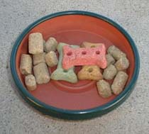
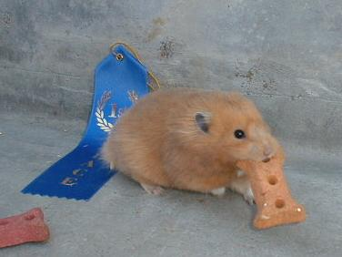

| Questions and Answers on Feeding | |||||||||||||||||||||||||||||||||||||||||||||||||
| by Linda Price | |||||||||||||||||||||||||||||||||||||||||||||||||
| What Should I Feed My Hamster? | |||||||||||||||||||||||||||||||||||||||||||||||||
| This is one of the most frequently asked questions. It's a difficult one to answer. I can tell you what I do, and you can modify it to fit your needs. I feed my hamsters a combination of lab blocks, a typical hamster seed/grain mix, and some fruits and veggies. Let's talk about each of these. | |||||||||||||||||||||||||||||||||||||||||||||||||
| What are lab blocks or lab pellets? | |||||||||||||||||||||||||||||||||||||||||||||||||
| These are a large pellet formulated for use in labs. The concept is the same as the dog and cat food most people feed their pets. Each pellet is the same, and each should include all of the nutrition needed for a hamster. It is a complete food. Most lab blocks, though, are formulated for rats and mice since they are the most common lab animals. If you buy from a quality lab company (one who actually sells to labs), they will offer many diet variations to fit your needs and can provide you with their study info. If you buy from a pet or feed store, you may not get the same quality control or research-backed food. | |||||||||||||||||||||||||||||||||||||||||||||||||
| There are many brands of lab pellets and a couple of shapes. I have used multiple brands but have shifted exclusively to a lab-tested brand, PMI, after having extensive difficulties with one known brand. Here is a picture of the two main shapes I have seen as well as dog biscuits which I use as treats to keep their teeth down. | |||||||||||||||||||||||||||||||||||||||||||||||||
|  | |||||||||||||||||||||||||||||||||||||||||||||||||
| When I feed my hamsters, I give them a combination of the lab blocks and seed mix based on species and on the mix of animals in the cage. I find that my syrians are very fond of the lab blocks and less fond of the seed mix. I still give them the seed mix periodically, but they get predominantly lab blocks unless there are babies in the cage. Don't get me wrong. Babies love lab blocks. Nothing is cuter than a baby on his back trying to balance a lab block almost his size using all four feet while eating bites at the same time. I still like to give them the smaller pieces too. | |||||||||||||||||||||||||||||||||||||||||||||||||
| My dwarves, on the other hand, love their seed mixes. I give them some of both regularly although the larger percentage is still the lab blocks. The typical pattern is for them to pick their favorites out of the seed mix, then eat the lab blocks, and then eat their least favorites out of the seed mix (and most of the least favorite pieces end up getting thrown out when I clean the cages). | |||||||||||||||||||||||||||||||||||||||||||||||||
| So why feed lab blocks at all? | |||||||||||||||||||||||||||||||||||||||||||||||||
| I see three key reasons: | |||||||||||||||||||||||||||||||||||||||||||||||||
| 1. Lab blocks force my hamsters to eat a relatively balanced diet. In the seed mixes, there are pieces which are never eaten. They never get the nutritional components in those pieces. With lab blocks, they always get a bit of all nutritional elements included in those lab blocks. | |||||||||||||||||||||||||||||||||||||||||||||||||
| 2. Lab blocks are hard and keep their teeth down. Hamsters' teeth will continue to grow. I use lab blocks and an occasional dog biscuit to help keep their teeth their proper length. | |||||||||||||||||||||||||||||||||||||||||||||||||
| 3. I can recapture the lab blocks when I clean the cages. The food is not wasted, and the hamster feels more secure when their food stash is transferred to their new cage. | |||||||||||||||||||||||||||||||||||||||||||||||||
| Why Feed Dog Biscuits? | |||||||||||||||||||||||||||||||||||||||||||||||||
| As I mentioned above, I use the dog biscuits to keep the hamsters' teeth the proper length. The formulation is not right to feed biscuits (or dog or cat food in general) to hamster on a regular basis, though. Some hamsters really like them like Creampuff who couldn't stand still for a picture when the prop was a dog biscuit. Others nibble on them very slowly. For the dwarf pairs, I break them in half and toss a piece in every couple of weeks. With the syrians, I do the same. | |||||||||||||||||||||||||||||||||||||||||||||||||
|  | |||||||||||||||||||||||||||||||||||||||||||||||||
| Will My Hamster Overeat? | |||||||||||||||||||||||||||||||||||||||||||||||||
| In general, hamsters do not overeat. They are like squirrels. They will gather all you give them and save the extra for a rainy day. That does not mean that they can't get fat. They can and do get fat. This is typically from eating an improper diet and/or little exercise and not from overeating. Nuts, seeds, and all of the store bought treats tend to be high in fat. They should only be used as treats and not as a key ingredient in their diet. | |||||||||||||||||||||||||||||||||||||||||||||||||
| What seed/grain mix should I use? | |||||||||||||||||||||||||||||||||||||||||||||||||
| This is another hard question. Studies done on the optimal hamster diet are few and far between -- essentially only done by the labs or lab block companies.. Many of the current hamster mixes were done with the advice of a veterinarian. Nevertheless, the mixes differ a lot. Some are very basic. Others are full of all kinds of variation and treats. I often buy the basic mix and then add my own treats as supplements. I typically use raw, unsalted sunflower seeds, peanuts, etc. as my added treats. They are available at health food stores (and at Trader Joe's here in California). I vary the number of added nuts and seeds based on my perception of my hamster's needs. Nursing mothers and babies get more. Retired or less active hamsters get less. | |||||||||||||||||||||||||||||||||||||||||||||||||
| When I use the fancy seed mixes like the one pictured above (The above picture is the Harry Hamster Mix the club is currently selling.), I pick out the treats. I still end up rationing the treats based on my perception of my hamsters' needs. | |||||||||||||||||||||||||||||||||||||||||||||||||
| What Treats Should I Feed My Hamster? | |||||||||||||||||||||||||||||||||||||||||||||||||
| Personally I never use the store bought treats. Many are like feeding a piece of cake to your hamster. He does not need it and will not miss it if you do not start the habit (wish we humans did not have such bad habits ourselves). My hamsters think that the treats I give them are great. I stick to the nuts and seeds as well as fresh fruits and vegetables. Personally mine love a small treat of apple, pear, broccoli, zucchini, cantaloupe, cucumber, etc. They think they are wonderful, and they are nutritious. They are also much cheaper than the treats in pet stores. | |||||||||||||||||||||||||||||||||||||||||||||||||
| A Final Word of Caution | |||||||||||||||||||||||||||||||||||||||||||||||||
| Here in Southern California, we have a chronic problem with bugs in the hamster mixes. All pet stores I know will admit they have them from time to time since they come from the manufacturer that way. There is a simple solution. Everytime you buy a bag of food, throw the whole bag (wrapper and all) into the freezer for 24-48 hours. This will kill the most common bugs which are a weevil type of bug. Unfortunately, though, I have recently found some worms that turn into moths which are resistant to this treatment. | |||||||||||||||||||||||||||||||||||||||||||||||||